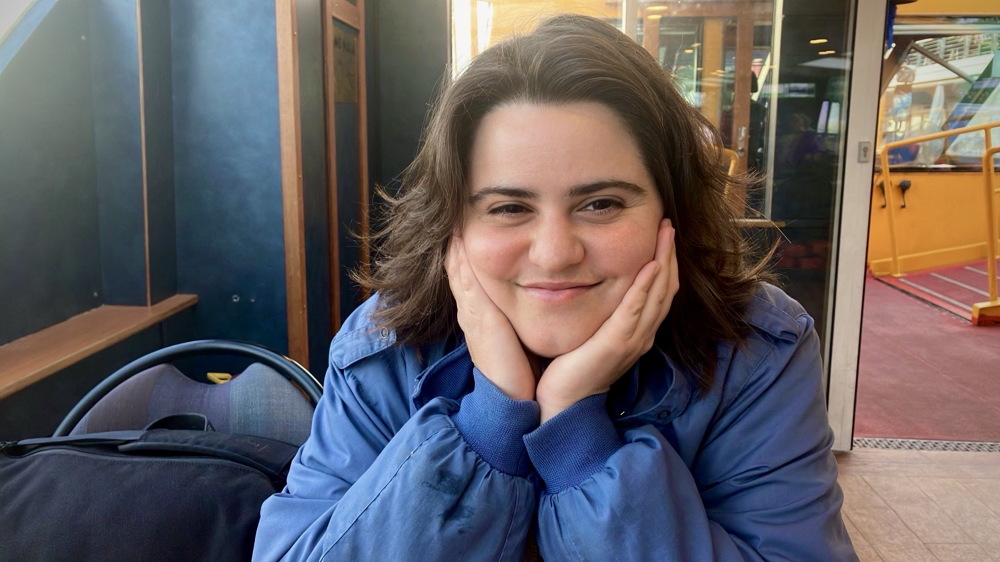

ABOUT
I am a writer and media artist living with a potato cat on an island in a river in a port. I like sleeping in libraries, hiding in pools, and learning to grow vegetables.
This project took root with abundant freshwater and sunshine from Kristoffer Tjalve since last summer, and with the gift of lightness from Laurel Schwulst in late winter 2023.
The poem-sites will continue to expand into a longer volume / larger garden in an MFA with the Klasse Digitale Grafik at the HFBK Hamburg from the fall of this year (2025).
Many thanks to many friends whose guiding eyes and warm voices have likewise helped grow these pages, poems, and me. ⚘